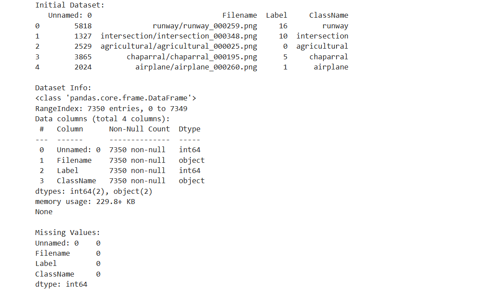
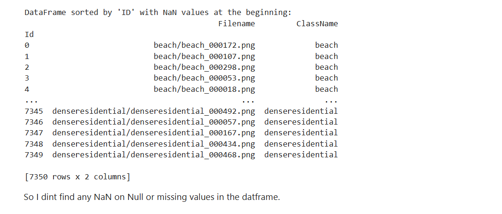

The Land-Use Scene Classification Dataset is a comprehensive collection of satellite imagery designed to facilitate the classification of land-use scenes. This dataset contains high-resolution images of various land-use categories, making it an essential resource for researchers and practitioners in the fields of remote sensing, urban planning, and environmental monitoring. The dataset is particularly valuable for training machine learning models to classify and analyze land-use patterns, which are critical for understanding urbanization, agricultural practices, and natural resource management. The dataset includes a diverse range of land-use categories, such as agricultural fields, forests, urban areas, water bodies, and barren lands. Each image is labeled with its corresponding land-use category, enabling supervised learning approaches. The high-quality imagery and well-structured annotations make this dataset suitable for a wide range of applications, including land-use change detection, urban growth prediction, and environmental impact assessment.
Dataset source: https://www.kaggle.com/datasets/apollo2506/landuse-scene-classification
Images from each class of the dataset.
10 Research Gaps/ Questions
Exploratory Data Analysis (EDA) Description for the Land-Use Scene Classification Dataset Exploratory Data Analysis (EDA) is a critical step in understanding the structure, patterns, and relationships within the dataset . For the Land-Use Scene Classification Dataset, EDA was conducted to uncover insights about the distribution of land-use categories, identify potential data quality issues, and prepare the dataset for machine learning models. The dataset contains high-resolution satellite images categorized into 12 distinct land-use classes, such as agricultural land, forests, urban areas, and water bodies. Below is a detailed description of the EDA process and findings.
Figure 1: Initial Dataset scraped from Kaggle API using python.
Figure 2: Dataset after cleaning process
Figure 3: Few Images from the dataset.
Figure 4: Class Distribution of Land Cover Images Dataset.
Figure 5: Classes in the Dataset.
Figure 6: Aspect Ration Distribution of Images.
Figure 7: Scatter plot of Image size distribution among the Dataset.
Figure 8: Average Image size per class.
Figure 9: Brightness distriubtion of IMages in Dataset.
Figure 10:Images from each class of the dataset.
According to the analysis or EDA I observed that the dataset is now clean and all the 7530 images in the dataset are perfectly processed.